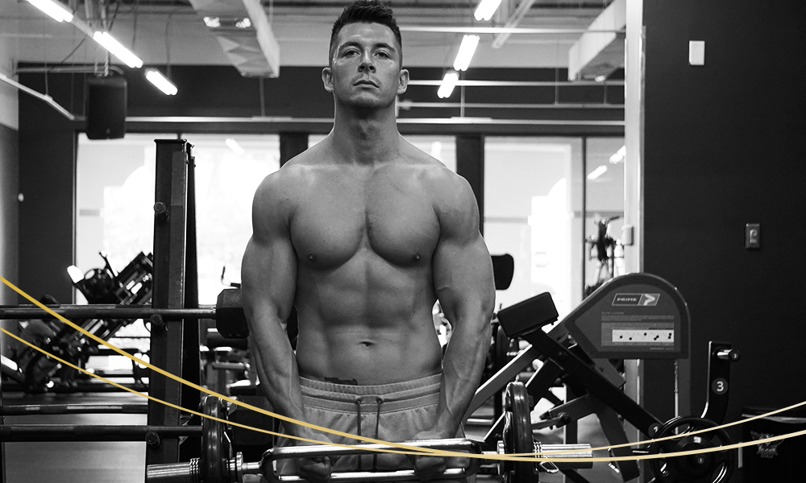

Welcome! We couldn’t be more excited to meet you. We are a young, ambitious team of personal trainers, chefs and nutritionists dedicated to fitness and healthy lifestyles. Your personal goals, ambitions and journey are our top priority. No matter if you are trying to lose weight, strive to get more fit and toned or simply want to live a healthier, happier life, our purpose is to guide you, push you, hold you accountable and cheer you on along the way. Before we get started, meet our team's key players who will be with you every step of the way.
Nicolas | Fitness & Nutrition
Nicolas is originally from Munich, Germany. Coming from Bavaria, where food is usually sourced and distributed locally, Nick has always had a deep appreciation for a healthy and clean lifestyle. His interest in a healthy diet went hand-in-hand with his passion for fitness. Nick has been active in the industry for over 10 years, so he knows the importance of setting attainable nutrition goals and realistic workout routines that fit in with your daily schedule. You can trust that his hands-on approach will guide you to achieve and maintain your goals.

Nicolas | Fitness CF Gym | 2019
Aicha | Fitness & Health
Aicha is originally from Berlin, Germany. She discovered her passion for fitness and health when she met Nick. Going to the gym and creating a variety of healthy, nutritious meals have become enjoyable parts of her everyday life, fully engrained, rather than dreadful tasks or chores. Aicha has been through the highs and lows of staying healthy and active. Today, working out and eating healthy are her source of energy and productivity. Aicha will be your greatest motivation and loudest cheerleader every step of the way.